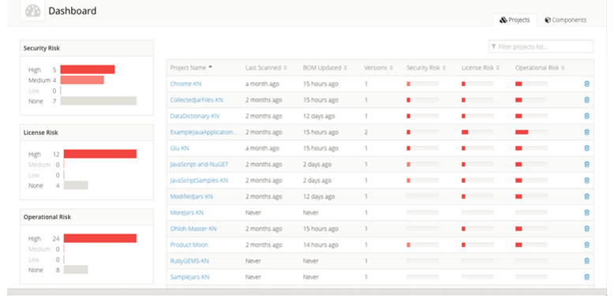
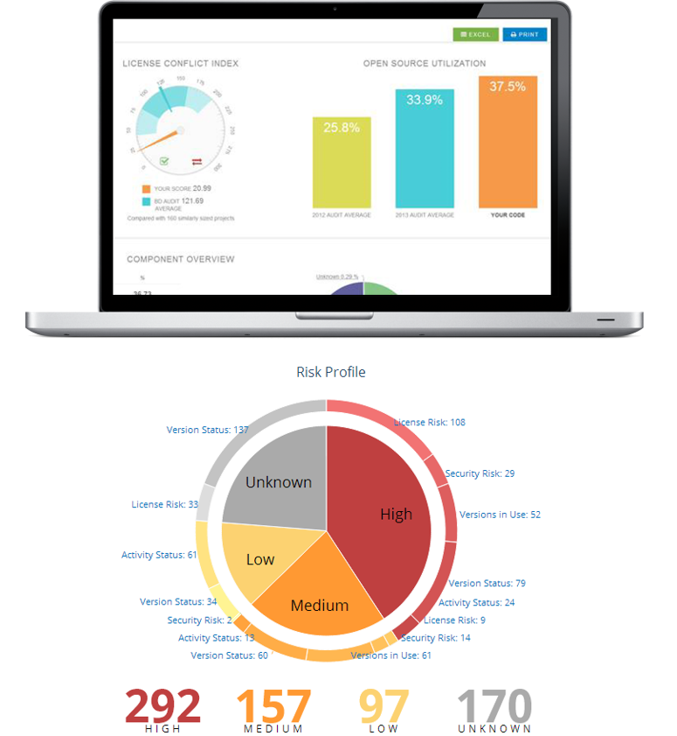

Service 서비스 소개
서비스 추진 배경

지금은 제 4차 산업혁명의 시대
제 4차 산업혁명의 시대에 주목해야할 기술로 단연 IoT를 꼽을 수 있을 것입니다. 따라서 저희 SOFA는 사용자가 자신의 IoT 기기의 보안 상태에 대해 경각심을 가질 수 있도록 기기의 취약성을 진단하는 서비스를 제공하려 합니다.
IoT기기 사용 현황 관련 설문조사
본 서비스를 개발 하기에 앞서 사람들의 IoT 사용 현황에 대해 설문조사를 진행했습니다. SNS를 통해 설문조사를 실시하였고, 대상자는 IT 지식이 있는 사람부터 관련 지식이 전혀 없는 사람까지 포괄적이었습니다. 5일 동안 총 302명이 응답하였습니다.

SOS finder 자세히보기

SOS finder 는 IoT 간호사
SOS finder는 IT 지식이 충분한 파워유저를 대상으로 하여, IoT 기기의 오픈소스를 점검하여 취약성에 대해 진단합니다.
펌웨어로 하는 보안 점검
SOS finder 기능 메뉴에서 자신의 IoT기기에 있는 펌웨어(실행파일)을 업로드하고 그에 대한 진단 결과를 확인할 수 있습니다.(실행파일 추출하는 방법은 매뉴얼을 참조하시길 바랍니다.)
취약점 데이터베이스 비교 분석
SOS finder Database에는 IoT에 사용된 취약한 오픈소스를 컴파일 하여 추출한 바이너리 정보가 저장되어 있습니다.
SOFA만의 사용자의 기기 속 실행파일과 취약 오픈소스의 바이너리 파일 간의 유사도 비교를 통해 기기의 취약성을 가시화하여 제공합니다.
|  |  |
접근성을 높인 웹 서비스
SOS finder는 사용자가 접근하기 쉬운 웹 형태의 보안 서비스를 제공합니다.
커뮤니티 운영을 통한 확장성
커뮤니티를 통해 사용자는 자신이 진단하고 싶은 취약성에 대해 건의를 할 수 있습니다. 이를 통해 SOS finder 데이터베이스의 확장성을 열어두었습니다.